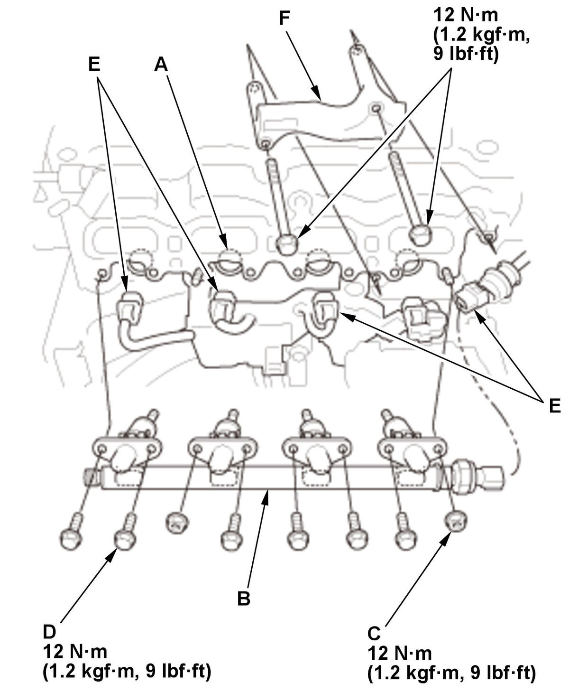

Injector Removal and Installation (L15B7/L15BA/L15BY): Installation
WARNING:
Flammable - Keep Fire Away
NOTE:
- Refer to the Fuel and Emissions Systems Service Precautions before disconnecting the fuel line.
- When replacing the injector, you must replace all injectors on the fuel rail as a set.
- Injector Seal - Install
NOTE: - Do not wipe off the tip area (A) of the injector as it may be damaged.
- If the tip of the injector is dirty or clogged, it must be replaced. The injectors cannot be cleaned.
1. Use compressed air to insure that there are no dust or debris around the ring (B).
2. With a paper towel, carefully wipe off any carbon from the area (C) shown.
3. Quickly push a new seal (A) down to the groove (B) of the injector using the seal guide tool (C) and the seal installer (D). 4. Joint the sizing tools (A), then slide them as a set onto the seal (B) until tools touch to the injector stepped surface (C) as shown, and hold the tools to reform the seal for 30 seconds or more. 5. Remove the sizing tool, and check that the seal is installed correctly.
NOTE: When cleaning the sizing tool, be careful not to scratch the sizing tool bore. - Injector - Install
1. Install a new back-up ring (A) and a new O-ring (B) on the injector (C).
NOTE:- Set the direction of the back-up ring as shown
- Check that the back-up ring sets correctly after installation.
2. Coat the O-ring with clean engine oil, then install the injector onto the fuel rail (D) with a new clip (E).
NOTE: When installing the injector, be sure to protect the injector from dust or debris.
- Fuel Rail and Fuel Injector - Install

Courtesy of HONDA, U.S.A., INC.1. Coat the injector holes (A) on the cylinder head with clean engine oil. 2. Carefully install the fuel rail (B) with the injectors into the cylinder head straight and equal.
NOTE: When installing the injector, protect the tip of the injector from dust or debris.
3. Install the nuts (C), and tighten slowly in an alternate pattern until the fuel rail sits on the cylinder head.
4. Tighten the nuts and the bolts (D) to the specified torque.
5. Connect the connectors (E).
6. Install the bracket (F).
- Fuel Joint Pipe - Install
NOTE: Failure to install a new fuel joint pipe will cause fuel leaks.
- High Pressure Fuel Pump Cover - Install
1. Install the high pressure fuel pump cover (A). NOTE: The cover will be reinstalled after the fuel leak check.
2. Connect the quick-connect fitting
(B).
- Fuel Leak - Check